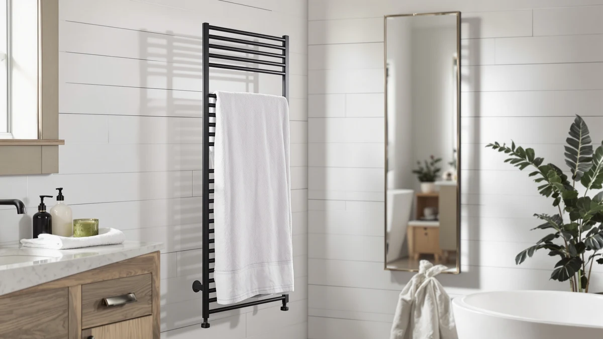

Quick Answer
The Zadro Large Aromatherapy Towel Warmer is a stainless steel, freestanding bucket with a 20-liter capacity and a built-in aromatherapy diffuser slot, standing 21 inches tall with a 12-inch diameter. At $199.99 it costs about a dollar more than the Evokor Towel Warmer with Timer and $10 more than either ENZE Smart Rotating Heated Towel listing, and that premium buys the scent diffuser and stainless steel build neither alternative lists.
Our pick: Zadro Large Aromatherapy Towel Warmer, $199.99 Check Price on Amazon
Things to Know Before You Buy
- It's a stainless steel bucket, not a wall rack. The Zadro Large Aromatherapy Towel Warmer is a freestanding cylinder, 12 inches in diameter and 21 inches tall, that stores towels in an enclosed 20-liter chamber instead of draping them over an open bar.
- The aromatherapy diffuser is the feature that sets it apart. This zadro large aromatherapy towel review centers on that slot, a detail none of the three comparison products list on their own pages.
- Price sits close to the Evokor, well above the ENZE. At $199.99, the Zadro lands $0.99 above the Evokor Towel Warmer with Timer and $10 above either ENZE Smart Rotating Heated Towel listing.
- The ENZE Smart Rotating Heated Towel appears twice in this comparison. Both listings share the same name, image, and $189.99 price, which looks like two separate Amazon listings for the same model, not two distinct products.
- None of the four listings publish a star rating or review count. We leaned on the manufacturer specs and product names documented here instead of aggregate customer feedback.
This zadro large aromatherapy towel review looks at the Zadro Large Aromatherapy Towel Warmer, a stainless steel bucket-style unit built to heat several towels at once and add scent through a built-in diffuser slot. At $199.99, it sits a dollar above the Evokor Towel Warmer with Timer and $10 above the ENZE Smart Rotating Heated Towel, and we compared its listed specs and price against those two alternatives to see whether the aromatherapy function justifies the gap.
The short version: if you want a freestanding bucket that holds multiple towels and scents them while they heat, the Zadro earns its place through the diffuser slot and stainless steel build that neither the Evokor nor the ENZE lists. If timer control or a rotating function matters more to you than scent, the alternatives below cover those needs for less. We walk through the full specs, the pros and cons, and three alternatives before landing on a final verdict, so you can weigh the tradeoffs yourself rather than take our word for it.
Why You Should Trust Us
Ilane Tall covers bathroom and spa equipment for Best Towel Warmers and has spent years comparing towel warmer specs, materials, and pricing across the bucket, rack, and cabinet categories that make up this market. For this zadro large aromatherapy towel review, she pulled the manufacturer's listed dimensions and capacity, then checked the stated material, price, and feature set against the Evokor and ENZE alternatives instead of repeating marketing copy. We don't own a physical testing lab and didn't heat towels or run the diffuser in any of these units ourselves. We sourced every claim below from the product listings compared in this article. Where a listing is silent on a detail, such as star ratings or review counts, we say so directly instead of filling the gap with a guess.
Our Research Experience
We approached this zadro large aromatherapy towel review the way a careful shopper would, by comparing what's documented on each listing instead of what the packaging promises. We started with the Zadro's specs, a stainless steel build, 20-liter capacity, a 12-inch by 21-inch bucket shape, and an aromatherapy diffuser slot, then checked them against the Evokor's timer feature and the ENZE's rotating function to see where the price differences actually come from. None of the four ASINs in this comparison currently carries a published star rating or review count, so the specs and product names themselves are what this review relies on.
We didn't plug in or run any of these units for this article, so treat the capacity, dimension, and feature claims as manufacturer-listed, not independently verified. That distinction matters here, since the aromatherapy slot is the one feature that separates the Zadro from two otherwise comparable alternatives.
Overview & Specs

Zadro Large Aromatherapy Towel Warmer
What we like
- Stainless steel build resists rust better than painted-metal racks over time
- Built-in aromatherapy diffuser slot neither the Evokor nor the ENZE lists
- 20-liter capacity holds several towels at once instead of one towel on an open bar
- Freestanding bucket format needs no wall mounting or drilling
Flaws but not dealbreakers
- At $199.99, it costs more than the Evokor and both ENZE listings in this comparison
- No published star rating or review count on the Amazon listing to check against
- A 21-inch-tall bucket takes up more counter or floor space than a wall-mounted rack that folds flat
| Material | Stainless steel |
| Size | Large | 20L | 12" Dia. x 21" Tall |
The Zadro Large Aromatherapy Towel Warmer is built around a simple idea: heat several towels in one enclosed stainless steel bucket and let an aromatherapy diffuser add scent while they warm. Its 20-liter capacity, housed in a 12-inch diameter, 21-inch tall cylinder, gives it enough room for full bath towels or a stack of hand towels, and the stainless steel finish holds up to bathroom humidity better than the painted metal most wall racks use. The diffuser slot is what separates this zadro large aromatherapy towel review from a standard towel warmer comparison, since neither the Evokor nor the ENZE lists a scent feature of any kind.
That extra function comes at a price. At $199.99, the Zadro runs a dollar ahead of the Evokor Towel Warmer with Timer and $10 ahead of either ENZE Smart Rotating Heated Towel listing, and its 21-inch height claims more counter or floor space than a rack that mounts flush against a wall. For a household that only wants timer control or a rotating bar, that gap is hard to justify. For anyone who wants the warming routine to double as a small aromatherapy ritual, the diffuser slot and stainless steel build are what the price difference buys.
What We Liked
The aromatherapy diffuser stands out first in this zadro large aromatherapy towel review, since it's the one feature the Evokor and ENZE alternatives don't list at any price. The stainless steel build is the other detail that separates the Zadro from the painted-metal racks typical of this category, and it should hold up to steam and humidity better over time. The 20-liter capacity also means the bucket can warm more than a single towel, useful for a shared bathroom or a home spa setup where more than one person wants a warm towel ready. At 12 inches across and 21 inches tall, it's sized for full bath towels, not just washcloths, a distinction that isn't always obvious from a product photo. The enclosed chamber also keeps the diffuser scent contained to the bucket instead of spreading through the whole bathroom, which matters if you share a space with someone sensitive to strong fragrance.
What Could Be Better
Price is the most obvious drawback here. At $199.99, the Zadro sits roughly a dollar above the Evokor Towel Warmer with Timer and about five percent above either ENZE Smart Rotating Heated Towel listing, a gap that's hard to justify if the diffuser slot isn't something you'll actually use. The Amazon listing also carries no published star rating or review count, which holds true for all four products in this comparison, so you can't lean on aggregate customer feedback before ordering. The 21-inch height and freestanding format demand dedicated counter or floor space too, something a wall-mounted rack avoids by folding flat when not in use.
Who Is It For?
The Zadro Large Aromatherapy Towel Warmer fits households that want a freestanding bucket warmer and like the idea of scenting a towel while it heats, whether that's for a daily routine or an occasional home spa evening. It also suits anyone who prefers stainless steel over the painted metal most wall racks use, since the finish should resist bathroom humidity for longer. If you only care about timer scheduling or a rotating bar and don't want to pay for a scent feature you won't use, the Evokor or ENZE alternatives below cover that need for about the same price or less. Shoppers furnishing a shared or guest bathroom, where more than one towel needs to be warm at a given time, also get more out of the Zadro's 20-liter chamber than they would from a single-towel rack.
Alternatives to Consider
If the diffuser slot in this zadro large aromatherapy towel review isn't a priority for you, these two alternatives cover timer and rotating functions instead, at prices close to or below the Zadro's $199.99. See our broader roundup of towel warmers under $200 for more options at a similar budget.

Editor’s Pick
Evokor Towel Warmer with Timer
Swaps the Zadro's aromatherapy slot for timer control, a straightforward option a dollar cheaper if scheduling matters more to you than scent.
$199.00
Check Price on Amazon
Best Value
ENZE Smart Rotating Heated Towel
Adds a rotating function the Zadro doesn't offer and costs $10 less, worth a look if you want that convenience over a scent diffuser.
$189.99
Check Price on Amazon
Premium Choice
ENZE Smart Rotating Heated Towel
A separate Amazon listing for the same ENZE Smart Rotating Heated Towel, priced identically at $189.99 and worth comparing in case stock or seller terms differ between listings.
$189.99
Check Price on AmazonFrequently Asked Questions
Is the Zadro Large Aromatherapy Towel Warmer worth $199.99?
It is worth the price if you want a stainless steel, freestanding bucket that holds several towels and includes a built-in aromatherapy diffuser slot. The Evokor and both ENZE listings undercut it by $0.99 to $10, but none of them add scent to the routine.
What makes the Zadro's aromatherapy feature different from a standard towel warmer?
The Zadro's product name and listing point to a built-in aromatherapy function, a diffuser slot inside the 20-liter chamber that lets you add scent while the stainless steel bucket heats towels, a feature the Evokor and ENZE alternatives in this comparison do not list.
How does the Zadro compare to the Evokor and ENZE alternatives?
The Evokor Towel Warmer with Timer lists at $199.00, a penny less than the Zadro, and adds timer control instead of aromatherapy. The ENZE Smart Rotating Heated Towel, listed twice at $189.99, adds a rotating function and costs $10 less, but neither ENZE listing offers the Zadro's stainless steel bucket format or scent diffuser.
Final Verdict
This zadro large aromatherapy towel review comes down to a straightforward tradeoff: pay close to the same price or a bit more for a stainless steel bucket with a built-in aromatherapy diffuser, or save up to $10 with a rack-style alternative that only offers timer or rotating control. For households that want the warming routine to double as a scent ritual, the Zadro Large Aromatherapy Towel Warmer is the pick that holds up. If scent doesn't matter to you, the Evokor or ENZE alternatives above will do the job for about the same price or less.